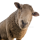
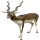

Choose organism to create
X
Wolf
Strength: 9, Initiative: 5

Sheep
Strength: 3, Initiative: 4
Fox
Strength: 4, Initiative: 7
Never tries to move to a field that is occupied by a stronger organism

Antelope
Strength: 4, Initiative: 4
Has double range of movement and 50% chance of fleeing from a fight
Turtle
Strength: 2, Initiative: 1
Won't change its field in 75% of times. Defends itself from attacks of organisms with strength lower than 5
Grass
Guarana
Eating it boosts strength by 3 points
Poison Berry
Kills everything that dares to eat it
Sow Thistle
Has three times as much chance of spreading than other plants